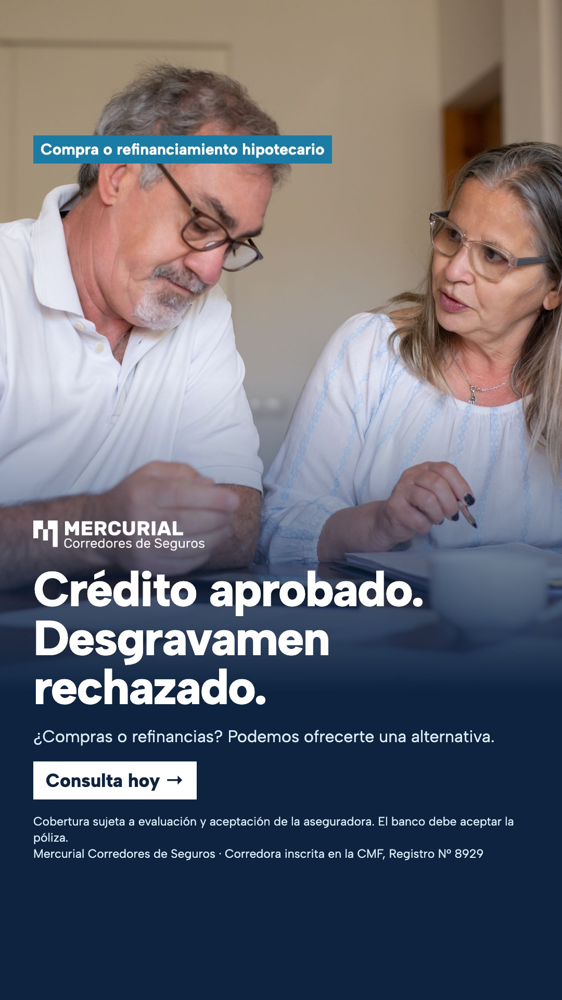
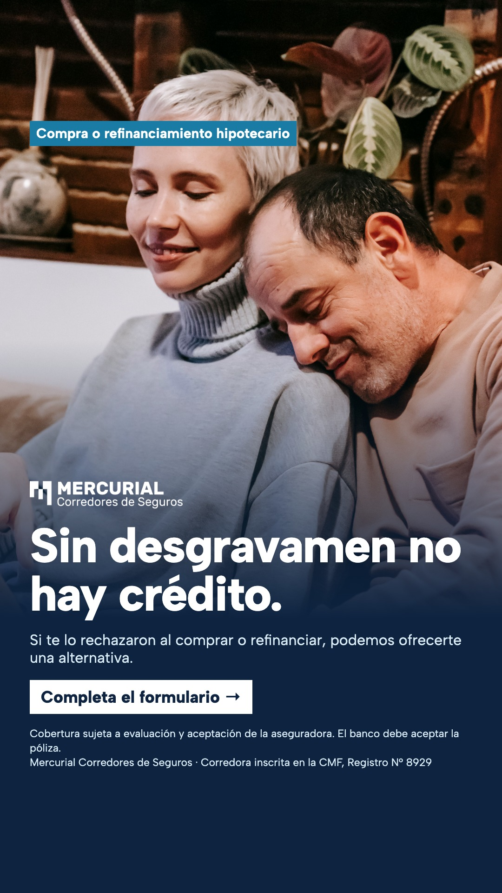
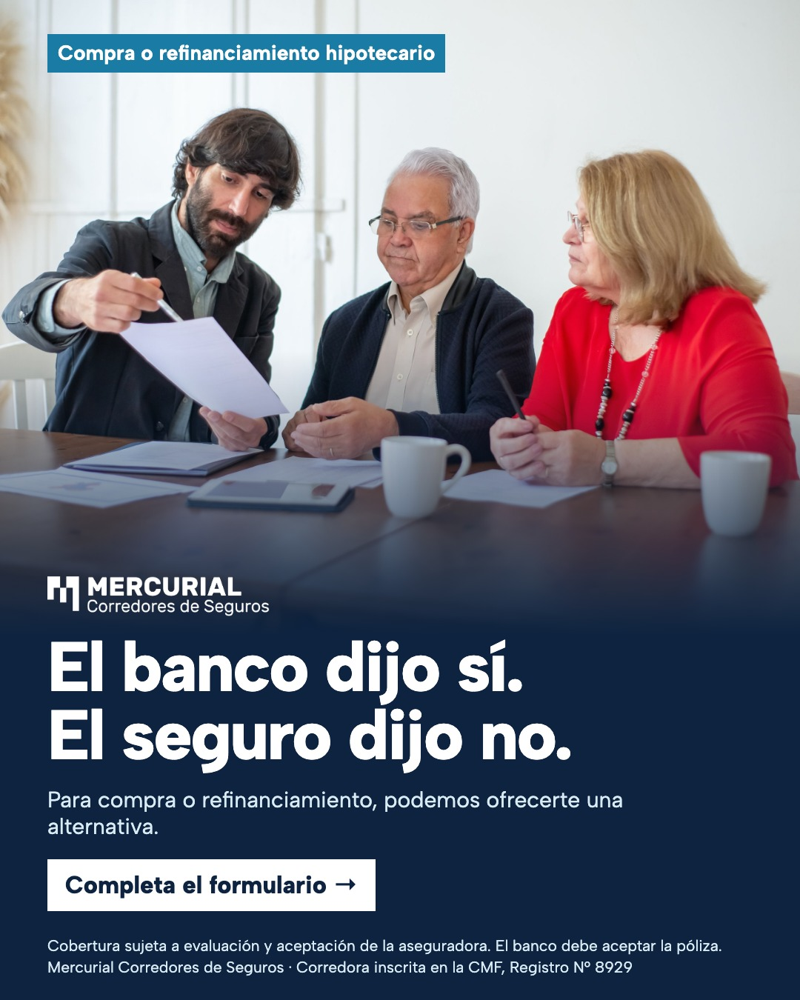
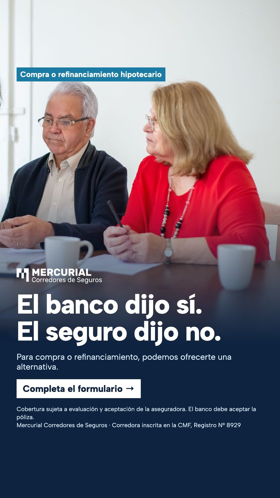
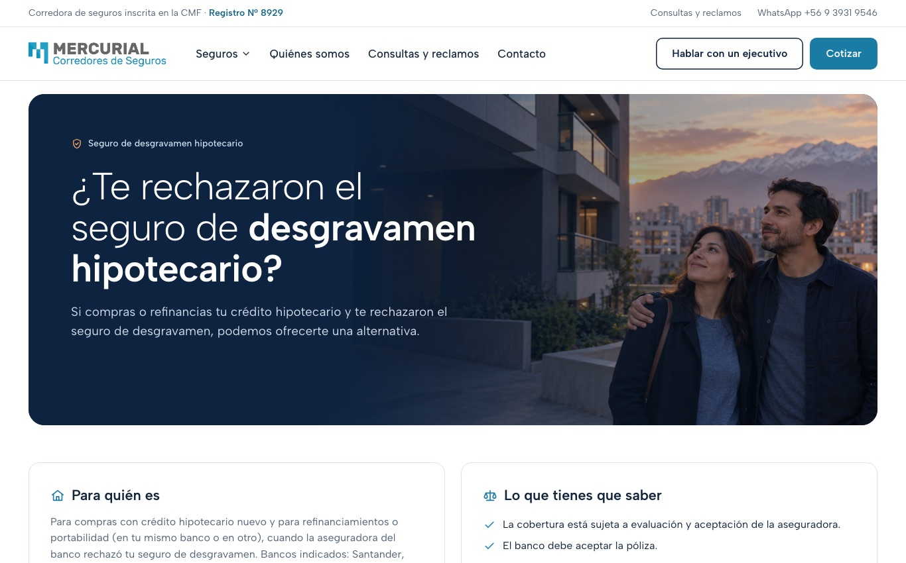
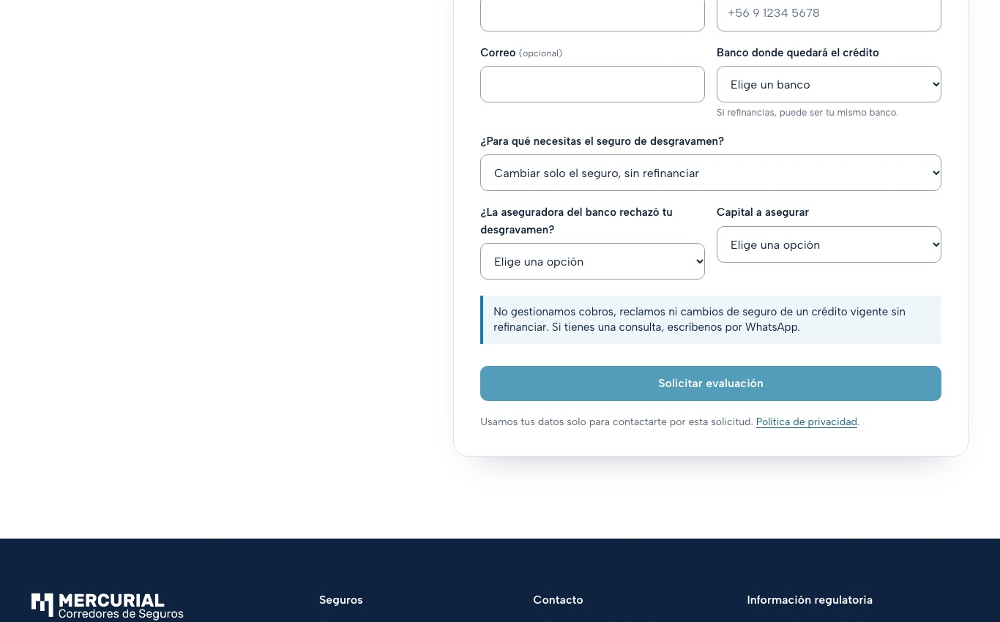
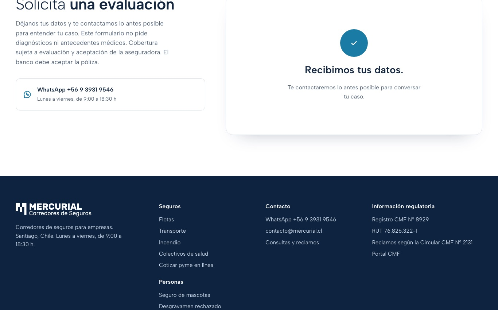
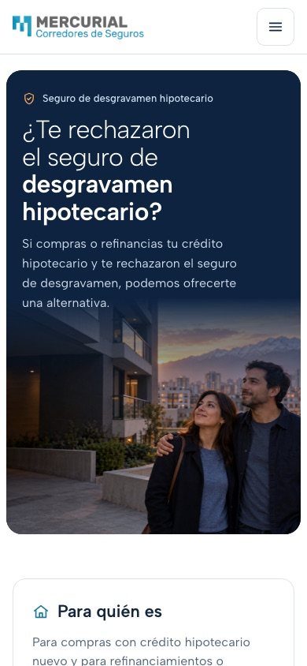
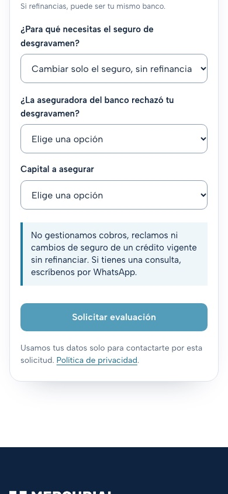
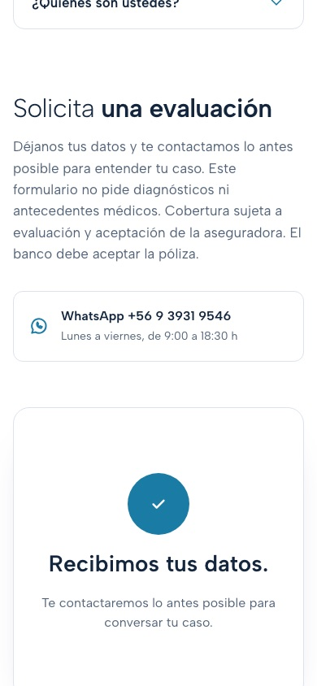

Desgravamen rechazado · compra y refinanciamiento
Aprobado por Pepa el 30-10-2026 (sin SMS; capital asegurado = monto del crédito). El estado de la publicación está en docs/campanas/desgravamen-meta.md.
Antes de la aprobación: Nada cargado en Meta. La landing, server.js y el mensaje de WhatsApp están cambiados solo en local (sin commit ni despliegue). El QA local está hecho; falta el QA en producción, que se hace después del despliegue. Pendientes reales al final.
Formulario instantáneo de Meta (por crear después del OK)
Nombre: MERC | Desgravamen rechazado | Compra y refinanciamiento | V2 · Mayor grado de intención · sin verificación por SMS · entrega flexible apagada.
Presentación: ¿Te rechazaron el seguro de desgravamen? Si estás comprando una propiedad o refinanciando tu crédito hipotecario y la aseguradora del banco rechazó tu desgravamen, podemos ofrecerte una alternativa. No gestionamos cobros, siniestros ni reclamos, ni el cambio de seguro de un crédito vigente sin refinanciar. Cobertura sujeta a evaluación y aceptación de la aseguradora. El banco debe aceptar la póliza.
| # | Pregunta | Respuestas y destino |
|---|---|---|
| P1 | ¿Para qué necesitas el seguro de desgravamen? | Compra con crédito hipotecario nuevo → P2 Refinanciamiento o portabilidad de mi crédito → P2 Cambiar solo el seguro de mi crédito actual, sin refinanciar → Cerrar Cobrar o reclamar un seguro → Cerrar |
| P2 | ¿La aseguradora del banco rechazó tu seguro de desgravamen? | Sí, me lo rechazaron → P3 Todavía no lo solicito → Cerrar No, me lo aprobaron → Cerrar |
| P3 | ¿En qué banco quedará tu crédito? (si refinancias, puede ser tu mismo banco u otro) | Santander · Banco de Chile · Itaú · BancoEstado · Banco Internacional · Consorcio → P4 Otro → Cerrar |
| P4 | ¿Por cuánto es el crédito que debe cubrir el seguro? (si refinancias, el monto del crédito nuevo; no el valor de la vivienda) | Desde UF 2.000 → P5 No lo sé / necesito orientación → P5 (revisión humana, sin descarte) Menos de UF 2.000 → Cerrar |
| P5 | ¿Para cuándo necesitas el seguro? | Esta semana / Este mes / Más adelante → Enviar (E1) |
Contacto: nombre, teléfono (obligatorio), correo (opcional). Sin preguntas de salud ni de edad.
E1 (califica): ¡Listo! Te contactaremos lo antes posible por WhatsApp desde el +56 9 3931 9546. Cobertura sujeta a evaluación y aceptación de la aseguradora. El banco debe aceptar la póliza. Botón: ¡Escríbenos por WhatsApp! → mercurial.cl/wa/desgravamen
E2 (no califica, no genera lead): Gracias por tu interés. Esta alternativa es para compras o refinanciamientos hipotecarios con el desgravamen rechazado, con un crédito desde UF 2.000, en Santander, Banco de Chile, Itaú, BancoEstado, Banco Internacional o Consorcio. No gestionamos cobros, reclamos ni cambios de seguro sin refinanciar.
Anuncios (4 conceptos)
01 · Te rechazaron el desgravamen

Texto principal
¿El banco aprobó tu hipotecario, pero te rechazaron el desgravamen? Si compras o refinancias, podemos ofrecerte una alternativa. Bancos indicados: Santander, Banco de Chile, Itaú, BancoEstado, Banco Internacional y Consorcio. Cobertura sujeta a evaluación y aceptación de la aseguradora. El banco debe aceptar la póliza. No aplica a cobros, reclamos ni cambio de seguro sin refinanciar.
Título Te rechazaron el desgravamen
Descripción Compra o refinanciamiento
Botón Más información → formulario
02 · Sin desgravamen no hay crédito

Texto principal
Sin desgravamen, el banco no cursa tu crédito. Si te lo rechazaron al comprar o refinanciar, completa el formulario: podemos ofrecerte una alternativa. Bancos indicados: Santander, Banco de Chile, Itaú, BancoEstado, Banco Internacional y Consorcio. Cobertura sujeta a evaluación y aceptación de la aseguradora. El banco debe aceptar la póliza.
Título Sin desgravamen no hay crédito
Descripción Hay una alternativa
Botón Más información → formulario
03 · Desgravamen rechazado al refinanciar
Texto principal
¿Refinancias tu hipotecario y te rechazaron el desgravamen? Podemos ofrecerte una alternativa. Bancos indicados: Santander, Banco de Chile, Itaú, BancoEstado, Banco Internacional y Consorcio. Cobertura sujeta a evaluación y aceptación de la aseguradora. El banco debe aceptar la póliza. No aplica a cambio de seguro sin refinanciar.
Título Desgravamen rechazado al refinanciar
Descripción Refinanciamiento hipotecario
Botón Más información → formulario
04 · El banco dijo sí. El seguro, no.


Texto principal
Te aprobaron el crédito, pero te rechazaron el desgravamen. Para compra o refinanciamiento, podemos ofrecerte una alternativa. Bancos indicados: Santander, Banco de Chile, Itaú, BancoEstado, Banco Internacional y Consorcio. Cobertura sujeta a evaluación y aceptación de la aseguradora. El banco debe aceptar la póliza. No aplica a cobros ni reclamos.
Título El banco dijo sí. El seguro, no.
Descripción Consulta hoy
Botón Más información → formulario
Landing /desgravamen-rechazado (cambios solo en local)
- Meta description y og:description, hero: compra o refinanciamiento; se quitó "motivos de salud".
- Bloque "Para quién es", con los bancos indicados y el mismo banco permitido. Se agregó la exclusión de cobros, siniestros, reclamos y cambio de seguro sin refinanciar.
- "3 a 5 horas hábiles" pasa a "lo antes posible", sin plazo garantizado. Se mantiene el aviso de evaluación y aceptación.
- Formulario con el mismo filtro que Meta: para qué necesitas el seguro, rechazo previo, banco donde quedará el crédito (lista; "Si refinancias, puede ser tu mismo banco") y monto del crédito a asegurar (con "No lo sé"). Los casos fuera de alcance muestran un aviso y no se envían. El servidor también los rechaza; esto aplica solo al formulario de desgravamen y no toca pyme ni los otros formularios.
- No se modificaron CRM, GTM, píxel ni CAPI.
Capturas tomadas después de pulsar "Rechazar" en el banner de cookies, solo en el navegador de prueba (el consentimiento del producto no cambia).






Mensaje desde el formulario de Meta (mercurial.cl/wa/desgravamen): "Hola, me rechazaron el seguro de desgravamen y quiero consultar por una alternativa (ref: DH-META)". Botón de la landing: "Hola Mercurial, me rechazaron el seguro de desgravamen y quiero consultar por una alternativa." Número +56 9 3931 9546.
QA realizado
- Imágenes: 8/8 renderizadas sin desborde; 4 de 1080×1350 y 4 de 1080×1920. Logo blanco legible. Aviso legal y línea CMF dentro de la zona segura en las historias.
- Landing en escritorio (1366) y móvil (390): sin desborde horizontal, sin errores de JS propios (solo se bloquearon los trackers a propósito durante la prueba).
- Formulario: caso válido (refinanciamiento, mismo banco, "No lo sé") → éxito. Cambio de seguro → aviso y botón deshabilitado. Incompleto → no se envía. Error del servidor → se muestra el aviso. Servidor: cambio de seguro, sin rechazo, banco "Otro" o menos de UF 2.000 → 422; falta capital → 400. Cotización pyme y empresas sin cambios (OK). Correo en MAIL_DRY_RUN; no se envió nada real.
Pendientes
- La publicación y el QA en producción se registran en docs/campanas/desgravamen-meta.md.
- Fotos 02 y 03: las personas no se ven criollas (aceptado en la aprobación).